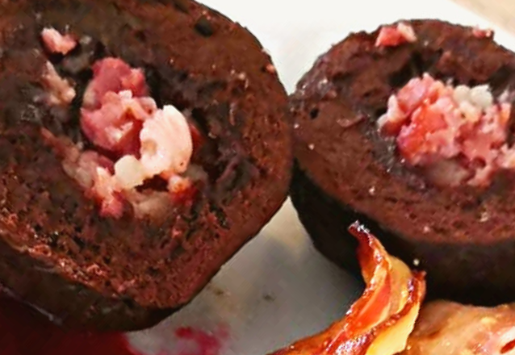

Blodpalt (reindeer blood dumplings)

Description
Reindeer husbandry has always been very important to the culture of the Sámi, the Indigenous people of the Sápmi territory that stretches across northern Norway, Sweden, Finland and Russia. After slaughter, Sámi households would traditionally use all parts of the animal for nutrition, clothing and other purposes.
Blodpalt is a recipe that makes use of the reindeer blood, and has been prepared in Sámi kitchens for hundreds of years, normally throughout the long dark winter.
Ingredients
- 2 liters reindeer meat broth
- 500ml reindeer blood (frozen and defrosted)
- Salt to taste
- 250 g white or rye flour
Steps
- Put the cold blood in a bowl and add a pinch of salt.
- Mix in the flour, stirring until the mixture is thickened and smooth.
- Heat the broth until it comes to the boil.
- Drop half-spoonfuls of the mixture into the boiling broth.
- The dumplings will sink to the bottom then rise to the surface. Let them boil for 5 more minutes on the surface before removing with a slotted spoon.
Hyvää ruokahalua!